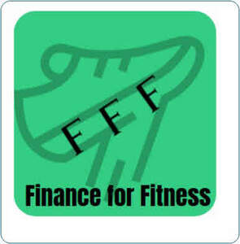

Trade Mark Journal No.2025/043 24 October 2025
UK00004278654 15 October 2025 (35,36)

Summary Finance for Fitness ‘Finance for Fitness’ is a wellness incentive creating a more active community by giving individuals money based on the distance they cover every day. Finance for Fitness is an app that will have everything the consumer/user needs on one app. It will include the bank balance of money they have saved up from exercise, a community tab via a consumers can connect to others. The app also includes a place to either give to charity or exchange money for vouchers. FFF mission is to increase physical activity and reduce emissions by encouraging individuals to walk or run to their workplace, or to generally get out and about. We believe that our business is essential to create a more active nation by giving money as an incentive. Finance for fitness is a way for consumers to earn money by also increase their activity throughout the day. This is important as health issues are very common and on the rise in the UK. Finance for fitness helps to try to tackle the cost-of-living crisis by giving consumers more money. Finance for fitness offers the first app which doesn’t include a made-up currency, but a currency used in our society. Consumers have the choice of either bank transfer or exchanging their money gained in the form of charities or vouchers for certain shops. Consumers do not need to worry about an untrustworthy currency and can have full confidence that they are receiving actual monetary gains/cashbacks Not only will Finance for Fitness provide an actual currency, but Finance for Fitness will make sure that every single person has the opportunity to maximise their rewards. For example, consumers who are not as physically able whether that is due to age or health conditions will get bonuses or shorter goals to reach so they can maximise the use of the app. Another aspect of finance for fitness that the app provides is an online marketplace for companies to market their product through the app. Companies will have the ability to use the app for a selected time to market themselves. Finance for fitness will provide a community aspect where consumers of similar interests have the choice of connecting to others. Groups can be created for communication or to make friends within the app. To summarise, Finance for Fitness is the first app to provide the chance to gain a significant amount of money which is used by society. Furthermore, FFF provide an opportunity for everyone to earn money, and we personalise goals. Not only is Finance for Fitness an app where consumer can earn money but a place where companies can use this app as a marketing tool.
- Class 35
- Advertising services relating to financial services; Advertising and marketing services; Marketing services; Advertising, marketing and promotional services; Advertising, promotional and marketing services; Marketing, advertising, and promotional services; Financial marketing; Advertising services for the promotion of e-commerce; Promotional and advertising services; Promotional advertising services; Advertising and promotional services; Digital advertising services; Advertising and marketing; Online advertising services; Advertising and marketing services provided by means of social media; Promotion [advertising] of business; Customer club services, for commercial, promotional and/or advertising purposes; Marketing.
- Class 36
- Financial services; Banking and financial services; Financial payment services; Financial transaction services; Financial credit services; Financial consultancy services; Financial pre-payment services; Personal financial banking services; Financial sponsorship services; Financial advisory services for companies; Financial and monetary services; Financial savings services; Banking services; Card operated financial services; Financial services provided to partnerships; Mobile banking services.
Jack Bryant